Srijana GS
Self-taught artist working in acrylic and watercolor — painting faces, memory, and quiet moments carried between Nepal, and every place life has taken her since.
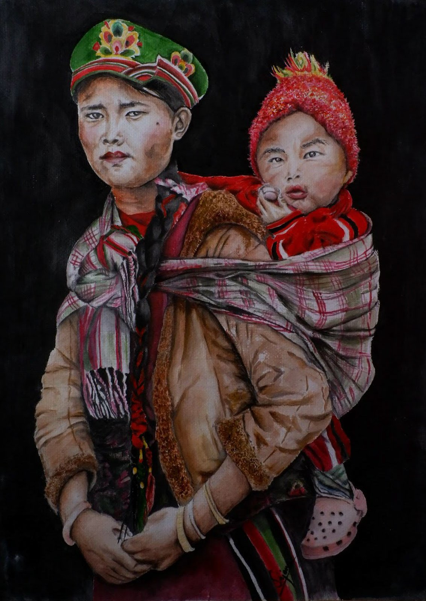
Painting as a way of looking closely
Srijana is a self-taught artist who paints in acrylic, watercolor, and mixed media — portraits of people she encounters through photographs, memory, and travel, alongside landscapes and quiet still life studies of flowers she's grown or gathered along the way.
Her portraits often return to faces that carry a story: honey hunters from the mountains of Nepal, mothers carrying children through the cold, a child comforted by an animal while waiting for someone to come home. She's drawn to expressions that hold both hardship and quiet dignity.
One painting travelled with her from Thailand to Germany, and on to New Zealand before a PhD — carried along not because it was finished, but because, as she puts it, finishing a piece can feel like its own quiet grief. She's currently based in Leipzig, Germany, still learning — most recently inspired by the work of painter Thomas Braun and a growing love for Impressionism.
Gallery
Twenty-five paintings — portraits, landscapes, and still life studies. Click any piece to see it larger.
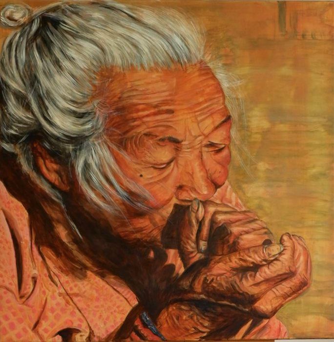
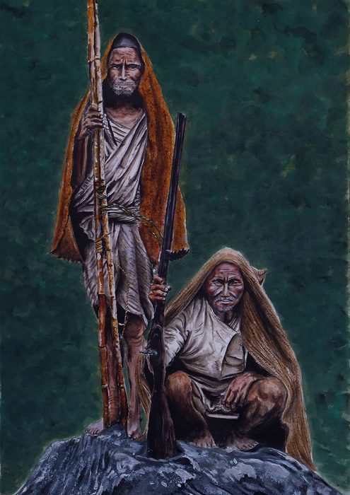
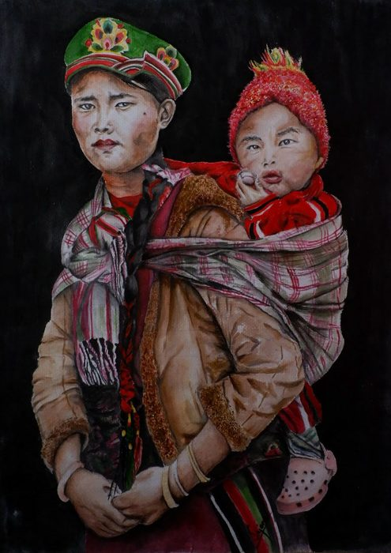
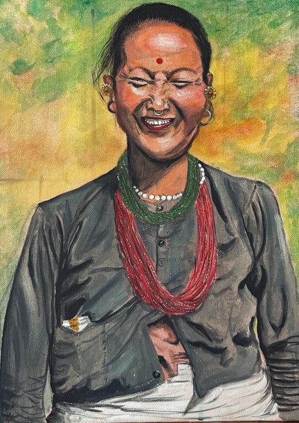
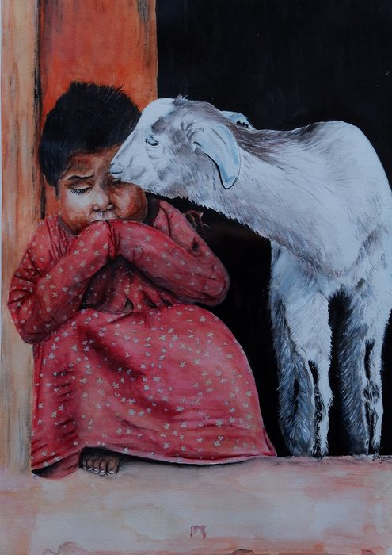
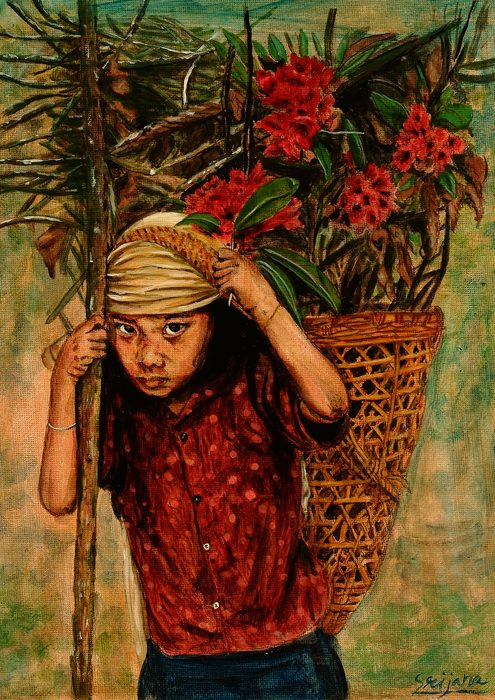
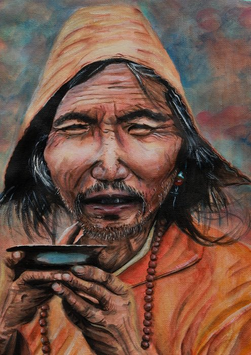
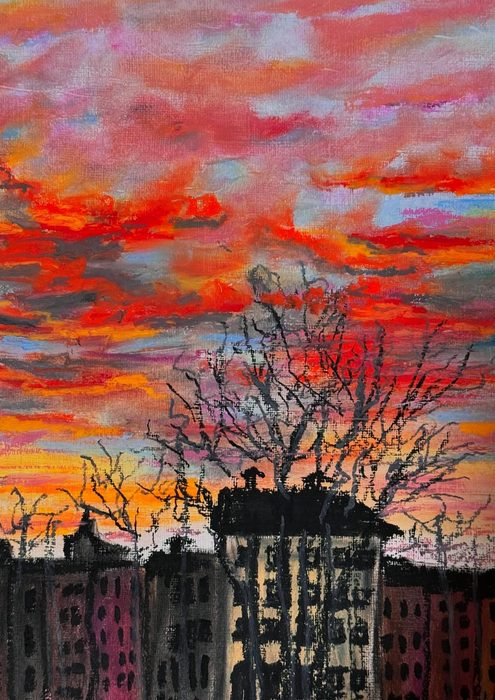
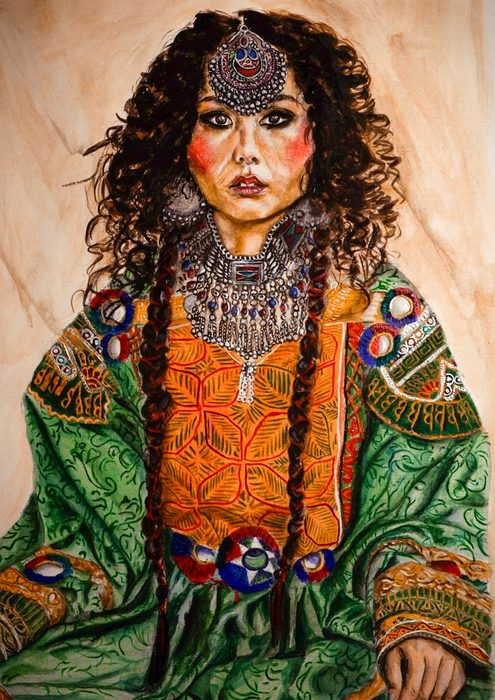
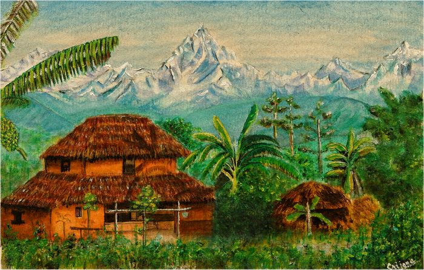
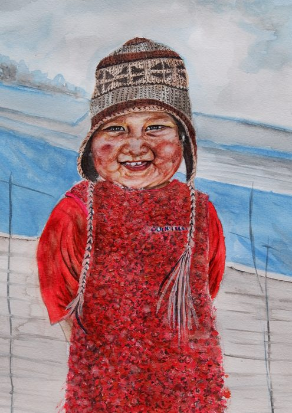
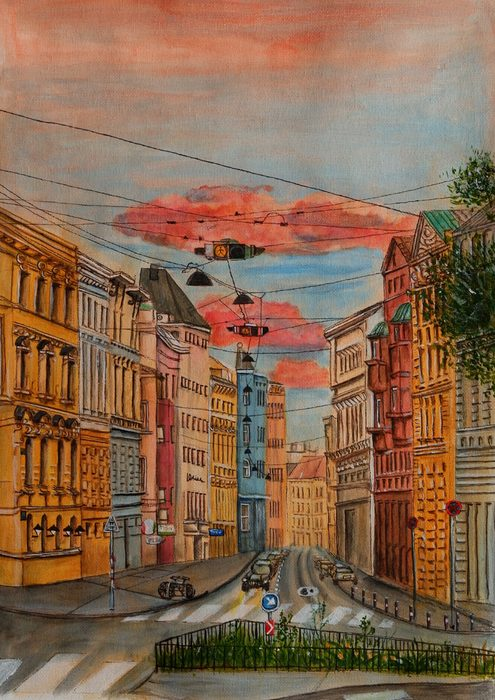
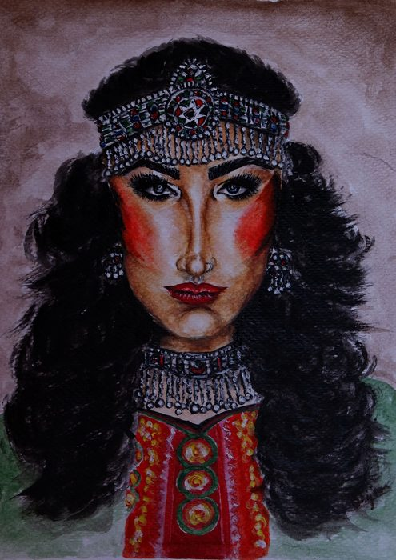
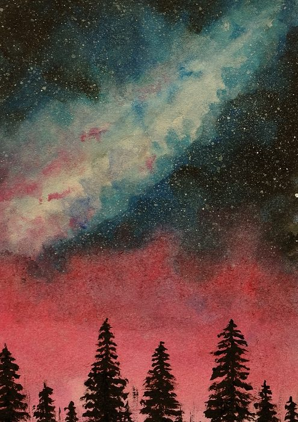
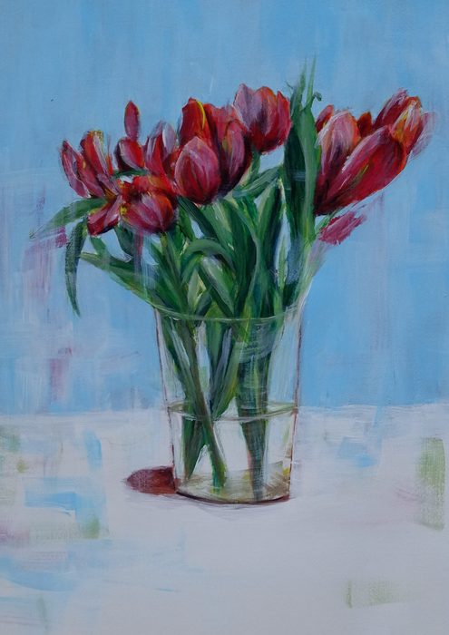
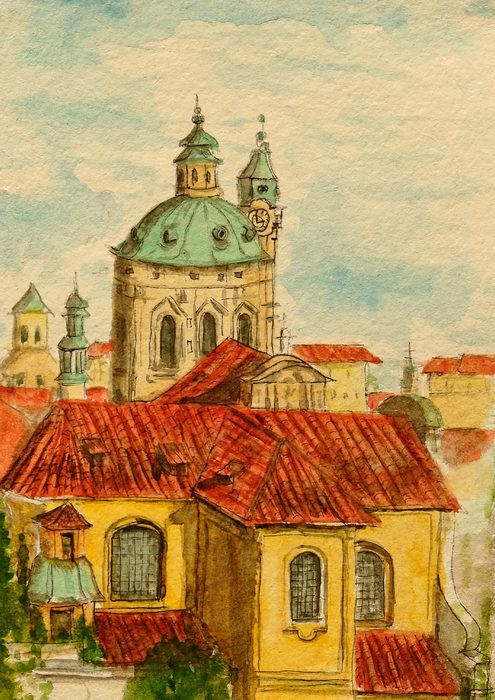
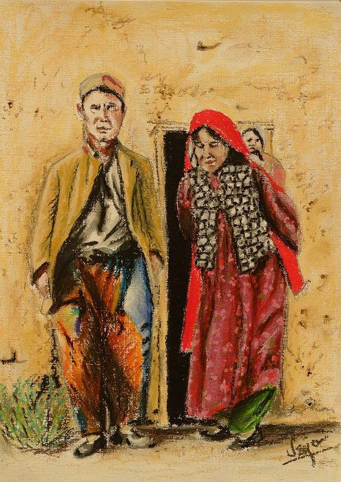
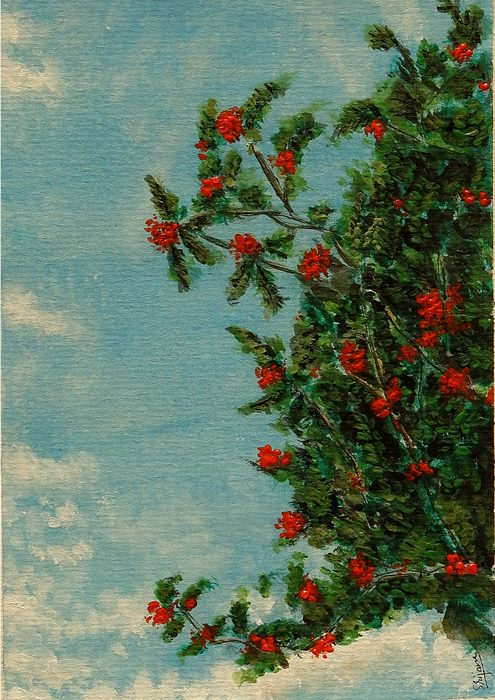
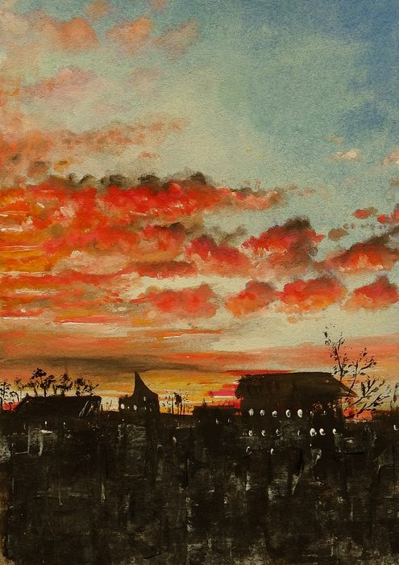
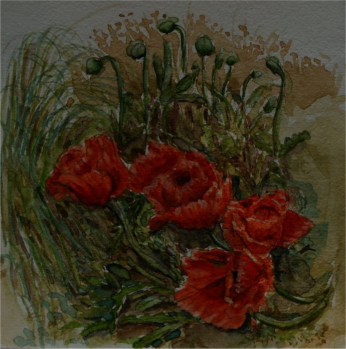
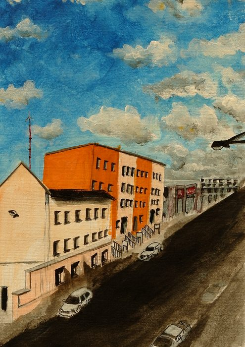
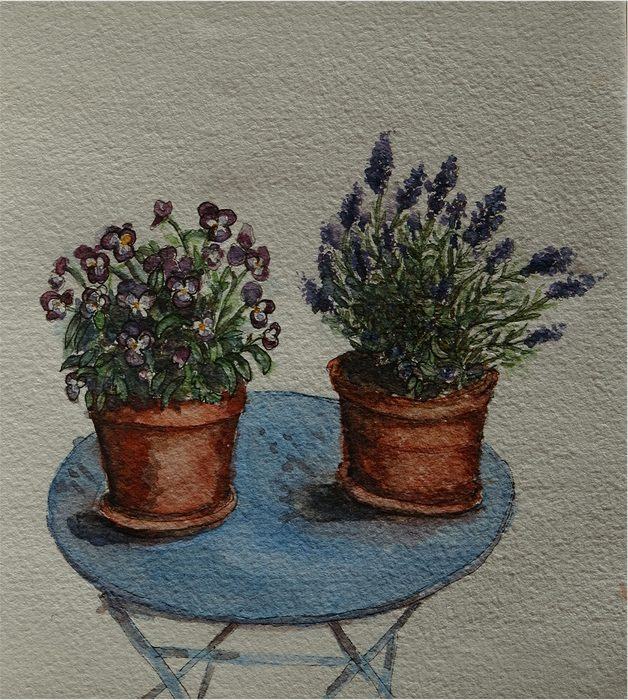
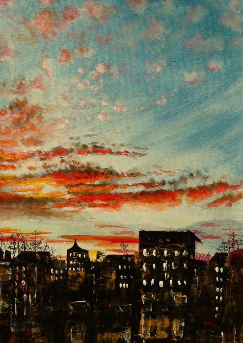
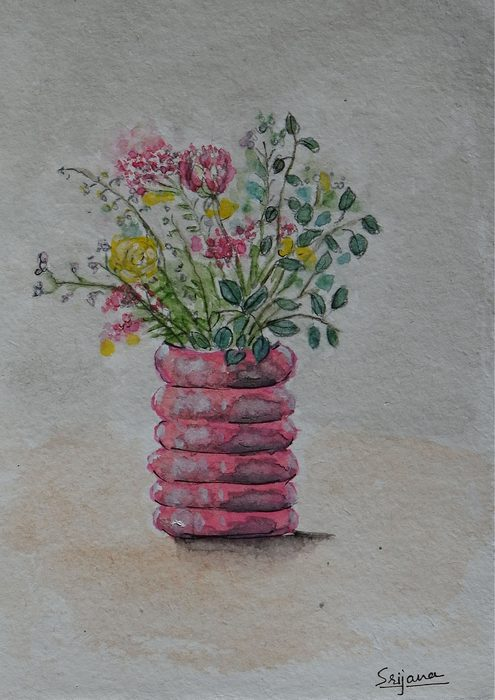
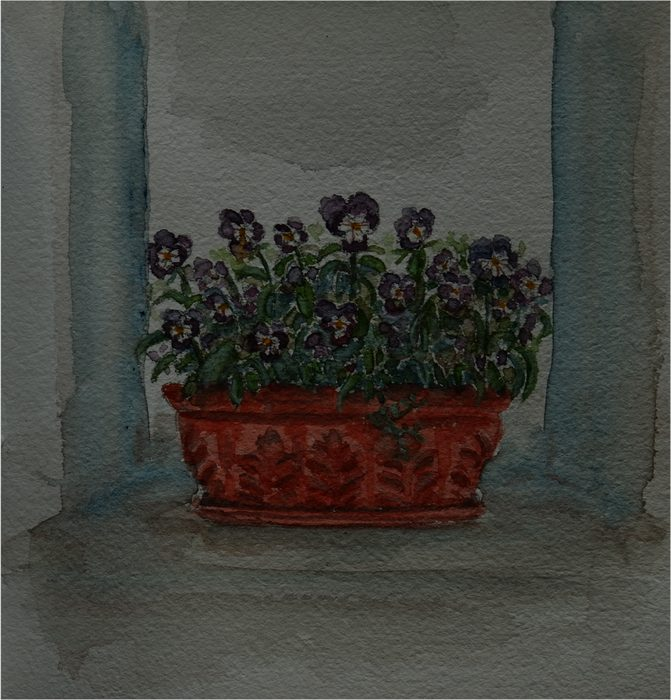
On finishing a painting
"There is this particular kind of sadness or grief wherever I finish a painting. It feels like the end of something — like the end of intimacy, closing the door, letting go."
"Maybe it's because I find the beauty in the process more than the final output — in the becoming, in the possibilities and uncertainty of an incomplete work."
— Srijana, from her studio in Leipzig
Commissions, prices & enquiries
Every painting on this site is an original, and most are available. Prices depend on size, medium and whether the piece is framed — write with the title you're interested in and you'll get a quote, usually within a couple of days.
srijana.art.art.gallery@gmail.com